Exercises <<
Previous Next >> ANSIC
練習二
1.Logical NOT
#include <stdio.h>
void main()
{
int a;
a = 3;
printf("%d\n", !a );
a = 0;
printf("%d\n", !a );
}
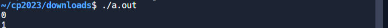
2.Logical AND
#include <stdio.h>
void main()
{
printf("%d\n", 1 && 3 );
printf("%d\n", 0 && 0 );
printf("%d\n", 2 && 2 );
}
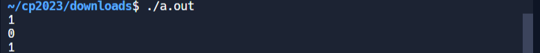
3.Logical OR
#include <stdio.h>
void main()
{
printf("%d\n", 1 || 0 );
printf("%d\n", 0 || 0 );
printf("%d\n", 2 || 2 );
}
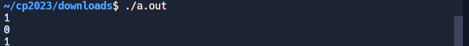
4.sizeof 的範例
#include <stdio.h>
void main()
{
char a;
printf( " The size of int is %d \n", sizeof(int) );
printf( " The size of char a is %d \n", sizeof(a) );
}
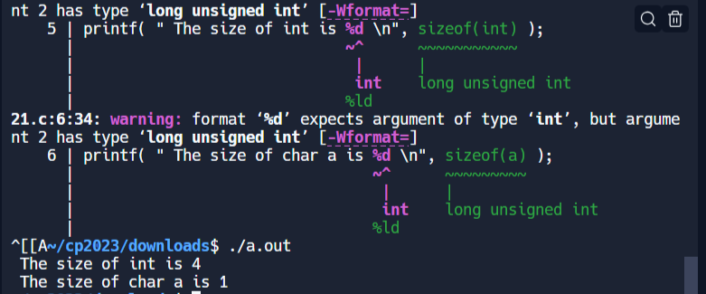
5.if 的範例
#include <stdio.h>
int main() {
char ch;
printf("input a char: ");
scanf("%c", &ch);
if (ch == 'a') {
printf("You pressed 'a'\n");
}
return 0;
}
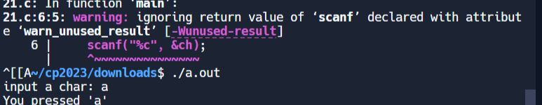
若輸入的是 a, 則會印出一段 " You Pressed 'a'" 這一段文字.
6.if 與 else 的範例1
#include <stdio.h>
int main() {
char ch;
printf("input a char: ");
scanf("%c", &ch);
if (ch == 'a') {
printf("You pressed 'a'\n");
} else {
printf("You didn't press 'a'\n");
}
return 0;
}
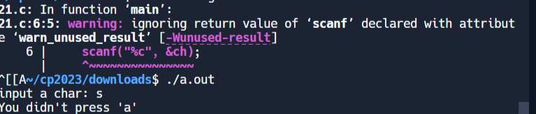
輸入一個字元, 若是 'a' 則會印出 " You pressed 'a'", 否則會印出 " You didn't press 'a'".
這裡輸入s，所以跳出 " You didn't press 'a'".
7. if 與 else 的範例2
#include <stdio.h>
int main() {
int i;
printf("input an integer: ");
scanf("%d", &i);
if (i < 100) {
printf("i < 100\n");
} else {
if ((i >= 100) && (i < 200)) {
printf("i >= 100 and i < 200\n");
} else {
printf("i >= 200\n");
}
}
return 0;
}
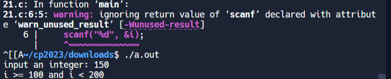
判斷輸入的數值是小於 100 或 大於等於 100 但小於 200 或是大於等 200.
這裡輸入150，固介於100到200之間.
8.switch - case 的範例
#include <stdio.h>
int main() {
char c;
printf("Input a char: ");
scanf(" %c", &c); // 加入一個空格在 %c 前，以排除之前的輸入緩衝區中的換行符號
switch(c) {
case 'a':
printf("You pressed 'a'\n");
break;
case 'b':
printf("You pressed 'b'\n");
break;
case 'c':
printf("You pressed 'c'\n");
break;
default:
printf("Not 'a', 'b', or 'c'\n");
break;
}
return 0;
}
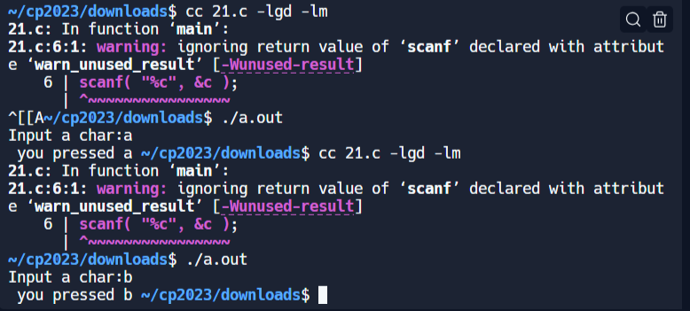
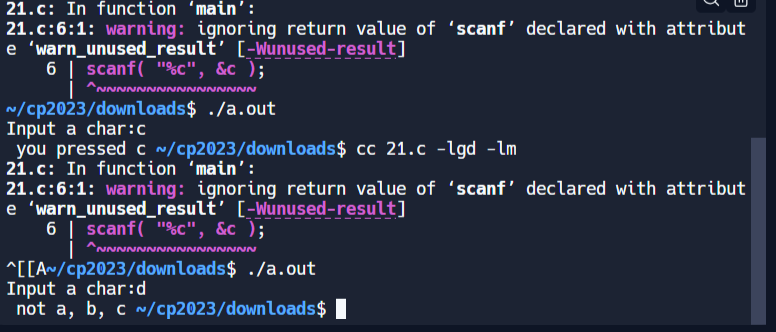
按了 'a' 會出現 "you pressed a".
按了 'b' 會出現 "you pressed b".
按了 'c' 會出現 "you pressed c".
按其它鍵會出現 "not a, b, c "
9.switch - case 的範例
#include <stdio.h>
int main() {
char c;
printf("Input a char: ");
scanf(" %c", &c);
switch(c) {
case 'a':
printf("You pressed 'a'\n");
break;
case 'b':
printf("You pressed 'b'\n");
break;
case 'c':
printf("You pressed 'c'\n");
break;
default:
printf("Not 'a', 'b', or 'c'\n");
break;
}
return 0;
}
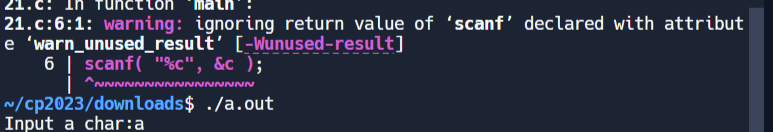
根據輸入的字元進行適當的回應
10.Program 1 - for
#include<stdio.h>
void main() {
int i;
for (i = 0; i < 6; i++) {
printf("%d\n", i); /* 印出 i */
}
}
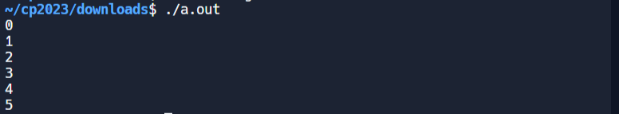
這段程式碼使用 for 迴圈從 0 開始迭代，當 i 達到 6 時，不再符合迴圈條件 i < 6，迴圈將停止.
在可攜程式環境中以 SciTE + Tiny C Compiler 編譯系統, 使用 Tools - Go 類編譯方式執行做Introduction to C.
1.
#include <stdio.h>
/* 示例：使用 if 條件判斷 */
int main() {
int this_is_a_number;
printf("請輸入介於1到10之間的整數：\n ");
scanf("%d", &this_is_a_number);
if (this_is_a_number < 6) {
printf("這個數字小於6；\n ");
} else {
printf("這個數字大於等於6；\n ");
}
printf("請輸入介於10到20之間的整數：\n ");
scanf("%d", &this_is_a_number);
if (this_is_a_number < 16) {
printf("這個數字小於16；\n ");
} else {
printf("這個數字大於等於16；\n ");
}
return 0;
}
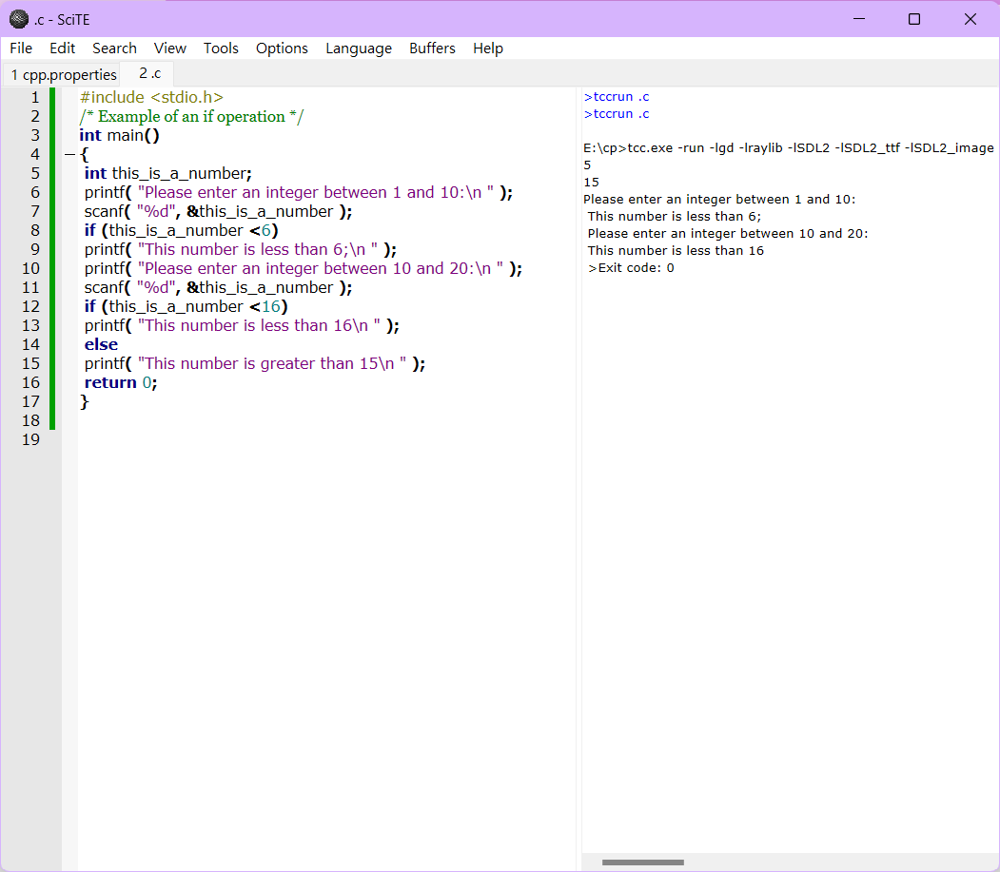
2.
#define _CRT_SECURE_NO_WARNINGS
#include <stdio.h>
/* 範例展示 if then else if 運算 */
int main() {
int this_is_a_number;
printf("請輸入介於1和10之間的整數：\n");
scanf("%d", &this_is_a_number);
if (this_is_a_number < 6) {
printf("這個數字小於6;\n");
}
printf("請輸入介於10和20之間的整數：\n");
scanf("%d", &this_is_a_number);
if (this_is_a_number < 16) {
printf("這個數字小於16\n");
} else if (this_is_a_number == 20) {
printf("這個數字是20\n");
} else {
printf("這個數字大於15\n");
}
return 0;
}
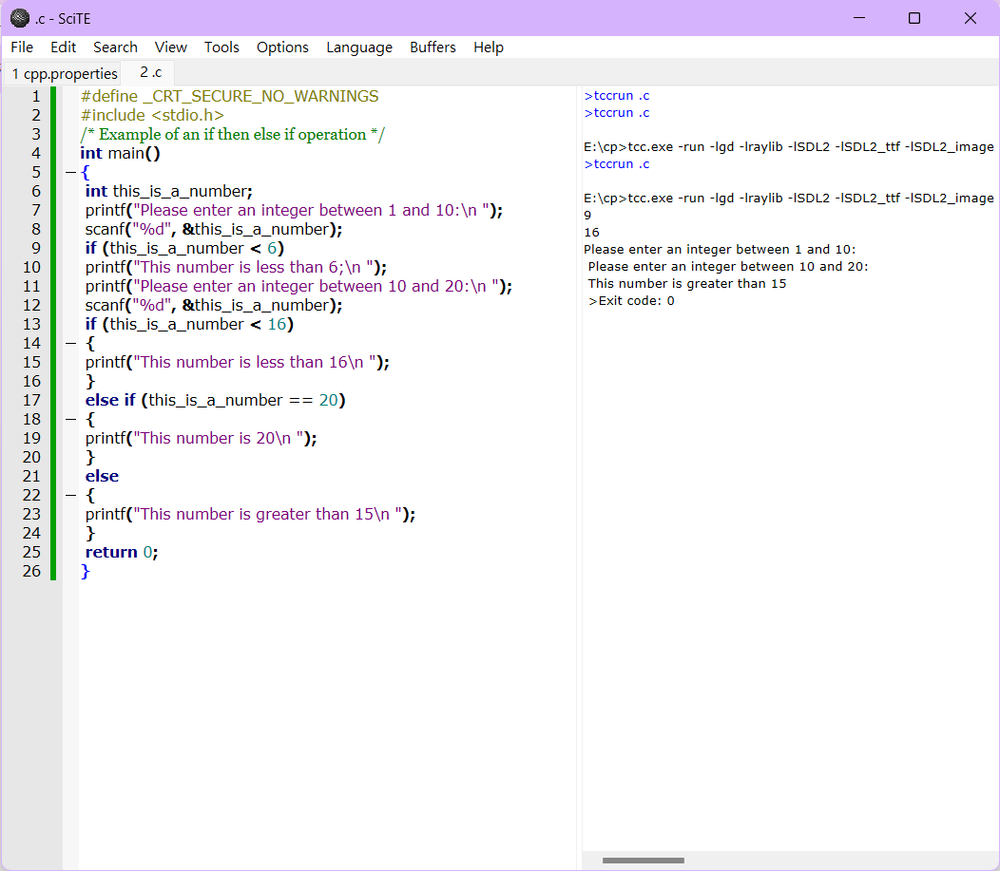
3.
#define _CRT_SECURE_NO_WARNINGS
#include <stdio.h>
/* 程式示範陣列的使用 */
int main()
{
int arr1[8]; /* 定義一個包含8個整數的陣列 */
int i;
printf("請輸入8個整數\n");
for (i = 0; i < 8; i++)
{
scanf("%d", &arr1[i]); /* 讀取到 arr1[i] */
}
printf("您的8個數字為\n");
for (i = 0; i < 8; i++)
{
printf("%d ", arr1[i]);
}
printf("\n");
return 0;
}
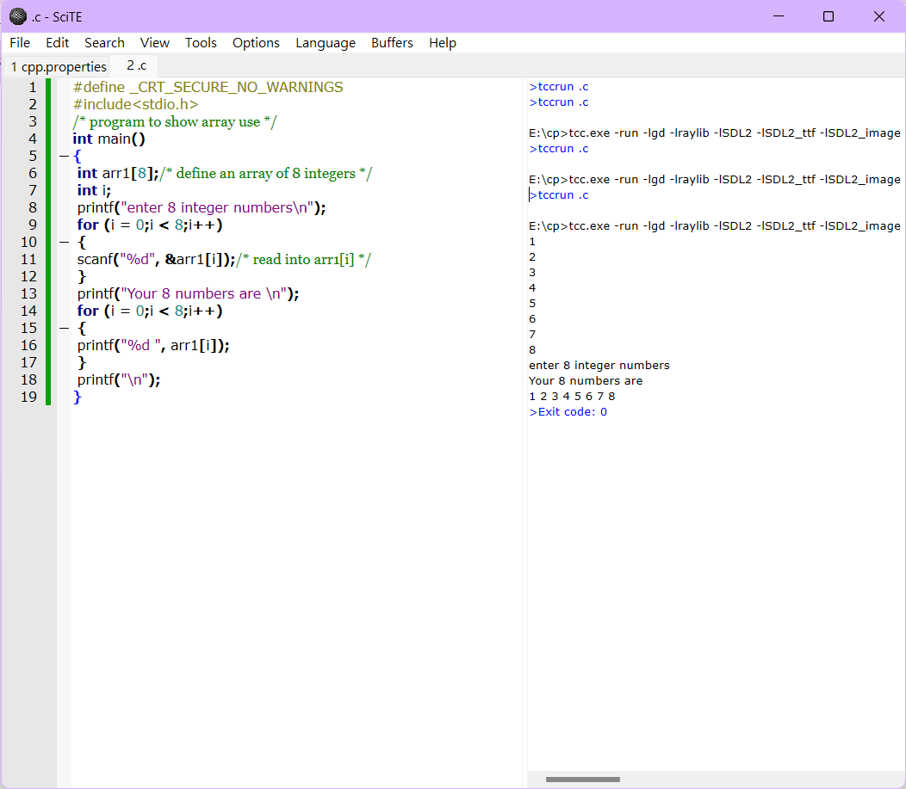
4.
#define _CRT_SECURE_NO_WARNINGS
#include <stdio.h>
/* 程式示範字元陣列的使用 */
int main()
{
char arr2[10]; /* 定義一個包含10個字符的陣列 */
int i;
printf("請輸入10個字元\n");
for (i = 0; i < 10; i++)
{
scanf(" %c", &arr2[i]); /* 讀取到 arr2[i] */
}
printf("您的10個字元為\n");
for (i = 0; i < 10; i++)
{
printf("%c ", arr2[i]);
}
printf("\n");
return 0;
}
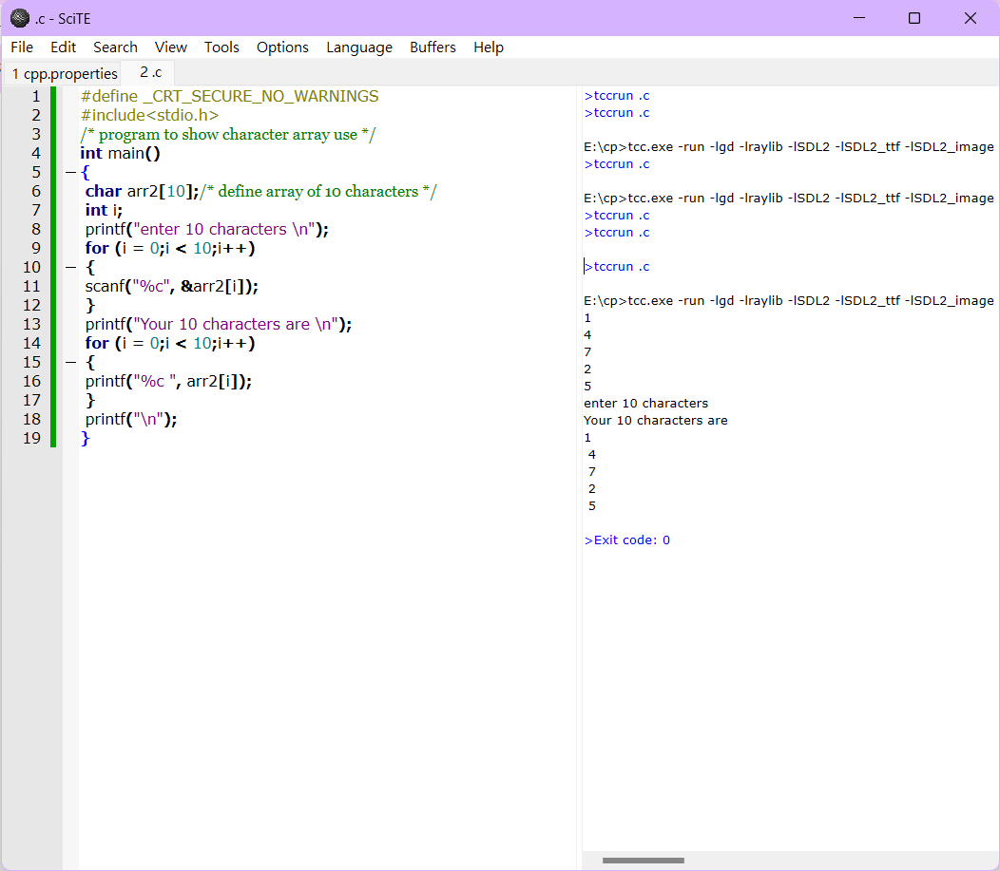
5.
#define _CRT_SECURE_NO_WARNINGS
#include <stdio.h>
#include <math.h>
/* Illustration of the common trigonometric functions */
int main() {
#define PI 3.14159265
double angle, radianno, answer;
/* 計算餘弦函數 */
printf("餘弦函數：\n");
printf("請輸入角度值：\n");
scanf("%lf", &angle);
printf("您輸入了 %lf\n", angle);
radianno = angle * (2 * PI / 360);
answer = cos(radianno);
printf("%lf 角度的餘弦值是 %lf\n", angle, answer);
/* 計算正弦函數 */
printf("正弦函數：\n");
printf("請輸入角度值：\n");
scanf("%lf", &angle);
printf("您輸入了 %lf\n", angle);
radianno = angle * (2 * PI / 360);
answer = sin(radianno);
printf("%lf 角度的正弦值是 %lf\n", angle, answer);
/* 計算正切函數 */
printf("正切函數：\n");
printf("請輸入角度值：\n");
scanf("%lf", &angle);
printf("您輸入了 %lf\n", angle);
radianno = angle * (2 * PI / 360);
answer = tan(radianno);
printf("%lf 角度的正切值是 %lf\n", angle, answer);
return 0;
}
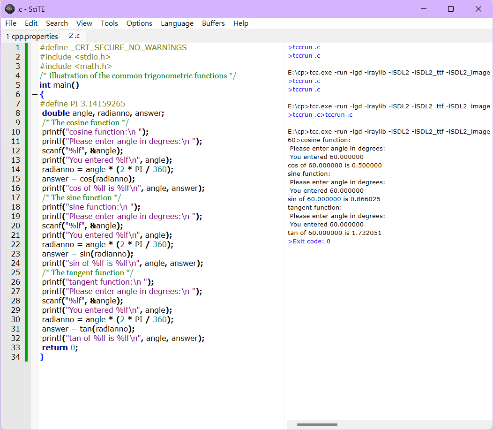
6.
#define _CRT_SECURE_NO_WARNINGS
#include <stdio.h>
#include <math.h>
int main() {
#define PI 3.14159265
double radianno, answer, arccos, arcsin, arctan;
/* 反餘弦函數 */
printf("反餘弦函數：\n");
printf("請輸入反餘弦值：\n");
scanf("%lf", &arccos);
printf("您輸入了 %lf\n", arccos);
radianno = acos(arccos);
answer = radianno * (360 / (2 * PI));
printf("%lf 的反餘弦值為 %lf 度\n", arccos, answer);
/* 反正弦函數 */
printf("反正弦函數：\n");
printf("請輸入反正弦值：\n");
scanf("%lf", &arcsin);
printf("您輸入了 %lf\n", arcsin);
radianno = asin(arcsin);
answer = radianno * (360 / (2 * PI));
printf("%lf 的反正弦值為 %lf 度\n", arcsin, answer);
/* 反正切函數 */
printf("反正切函數：\n");
printf("請輸入反正切值：\n");
scanf("%lf", &arctan);
printf("您輸入了 %lf\n", arctan);
radianno = atan(arctan);
answer = radianno * (360 / (2 * PI));
printf("%lf 的反正切值為 %lf 度\n", arctan, answer);
return 0;
}
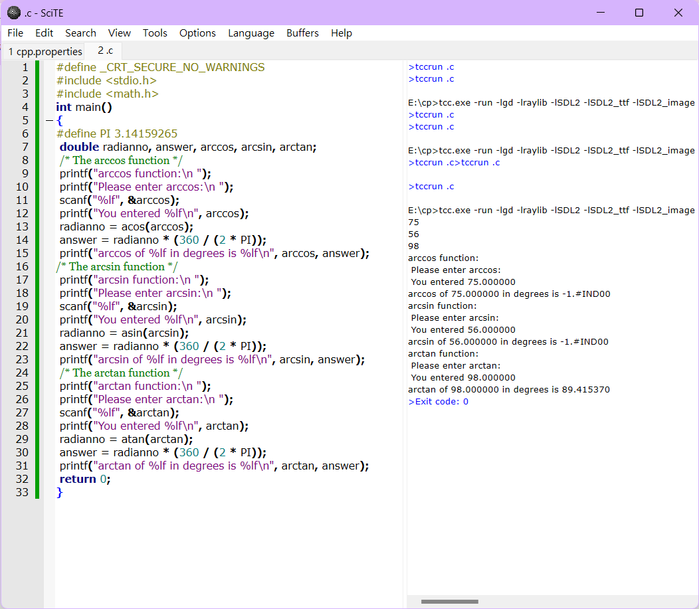
7.
#define _CRT_SECURE_NO_WARNINGS
#include <stdio.h>
/* 此程式碼展示了一個函式的作用 */
/* 這個函式比較兩個數字的大小 */
/* 使用者輸入三個數字，並獲得它們之間的大小關係！ */
void myfunction(int a, int b); /* 函式的宣告及其參數 */
int first, second, third;
int main() {
printf("請輸入第一個整數：");
scanf("%d", &first);
printf("請輸入第二個整數：");
scanf("%d", &second);
printf("請輸入第三個整數：");
scanf("%d", &third);
myfunction(first, second);
myfunction(first, third);
myfunction(second, third);
return 0;
}
void myfunction(int a, int b) {
/* 此函式位於程式主體 main{} 之外 */
/* 此函式僅比較兩個參數 a 和 b 的大小，並告訴使用者結果 */
if (a > b)
printf("%d 大於 %d\n", a, b);
else if (a < b)
printf("%d 大於 %d\n", b, a);
else
printf("%d 與 %d 相等\n", a, b);
}
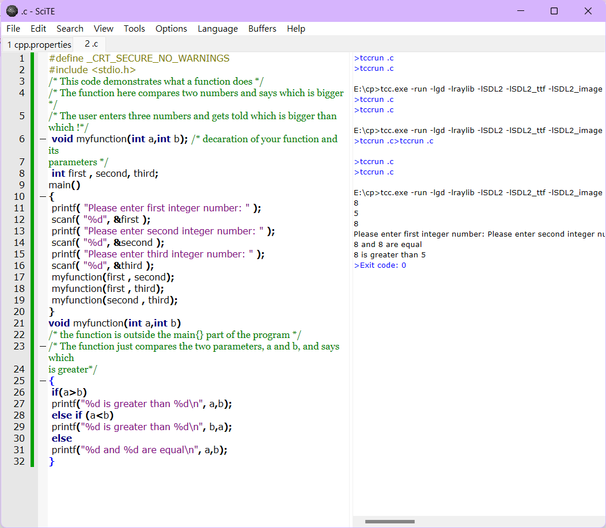
8.
#define _CRT_SECURE_NO_WARNINGS
#include <stdio.h>
#include <math.h>
/* 示範 exp、log 和 log10 函數的使用 */
int main() {
double answer, expno, natlog, lb10;
/* 計算輸入數字的指數 */
printf("指數函數：\n");
printf("請輸入一個數字：\n");
scanf("%lf", &expno);
printf("您輸入了 %lf\n", expno);
answer = exp(expno);
printf("%lf 的指數是 %lf\n", expno, answer);
/* 計算輸入數字的自然對數 */
printf("自然對數函數：\n");
printf("請輸入一個數字：\n");
scanf("%lf", &natlog);
printf("您輸入了 %lf\n", natlog);
answer = log(natlog);
printf("%lf 的自然對數是 %lf\n", natlog, answer);
/* 計算輸入數字的以 10 為底的對數 */
printf("以 10 為底的對數函數：\n");
printf("請輸入一個數字：\n");
scanf("%lf", &lb10);
printf("您輸入了 %lf\n", lb10);
answer = log10(lb10);
printf("%lf 的以 10 為底的對數是 %lf\n", lb10, answer);
return 0;
}
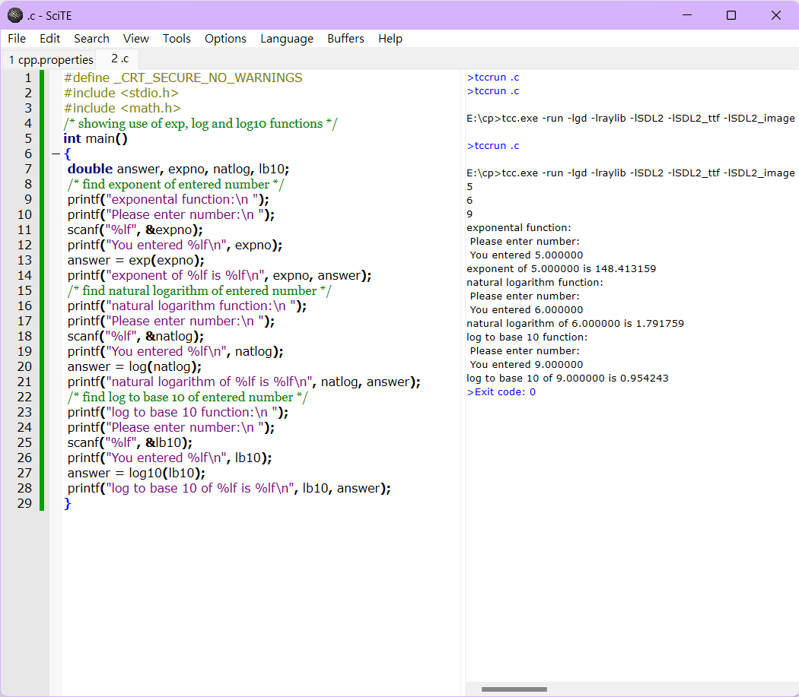
9.
#include <stdio.h>
/* 函數用於找出學生成績中的最高分 */
double getmarks(double pupils[]);
int main() {
double pupil;
/* 一個班級的成績陣列預先設定在主程式中 */
double marks[] = { 10.6, 23.7, 67.9, 93.0, 64.2, 33.8 ,57.5 ,82.2 ,50.7 ,45.7 };
/* 調用 getmarks 函數。該函數將返回最高分，然後將其存儲在 pupil 中 */
pupil = getmarks(marks);
printf("最高分是 = %f", pupil);
return 0;
}
/* 函數定義：找出最高分 */
double getmarks(double pupils[]) {
int i;
double highest;
highest = 0;
/* 逐個檢查所有學生的成績並存儲最高分 */
for (i = 0; i < 10; ++i) {
if (highest < pupils[i])
highest = pupils[i];
}
return highest; /* 將最高分返回到函數被調用的地方 */
}
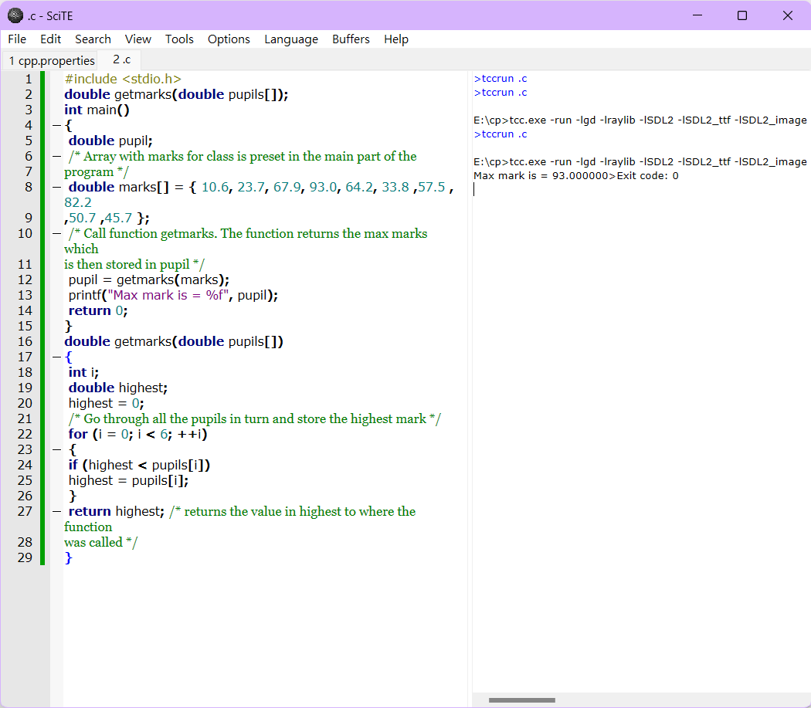
10.
#define _CRT_SECURE_NO_WARNINGS
#include <stdio.h>
#include <string.h>
/* 程式示範字串操作：strlen、strcpy、strcat、strcmp */
int main() {
char borrow[7] = { 'b', 'o', 'r', 'r', 'o', 'w','\0' };
char string1[32] = "This is string1";
char string2[16] = "This is string2";
char string3[16];
int len;
/* 顯示字串的長度 */
len = strlen(string1);
printf("strlen(string1) : %d\n", len);
len = strlen(string2);
printf("strlen(string2) : %d\n", len);
len = strlen(string3);
printf("strlen(string3) : %d\n", len);
/* 將 string1 複製到 string3 */
strcpy(string3, string1);
printf("strcpy( string3, string1) : %s\n", string3);
len = strlen(string3);
printf("strlen(string3) after copy of string1 into string3 : %d\n", len);
/* 比較 string1 和 string3（這兩者應該相同）*/
if (strcmp(string1, string3) == 0)
printf("strings are the same\n");
/* 將 string1 和 string2 串聯起來 */
strcat(string1, string2);
printf("strcat( string1, string2): %s\n", string1);
/* 串聯後的 string1 的總長度 */
len = strlen(string1);
printf("strlen(string1) after cat of string2 onto string1 : %d\n", len);
/* 顯示預定義的引號字元串 */
printf("String as predefined quoted chars: %s\n", borrow);
return 0;
}
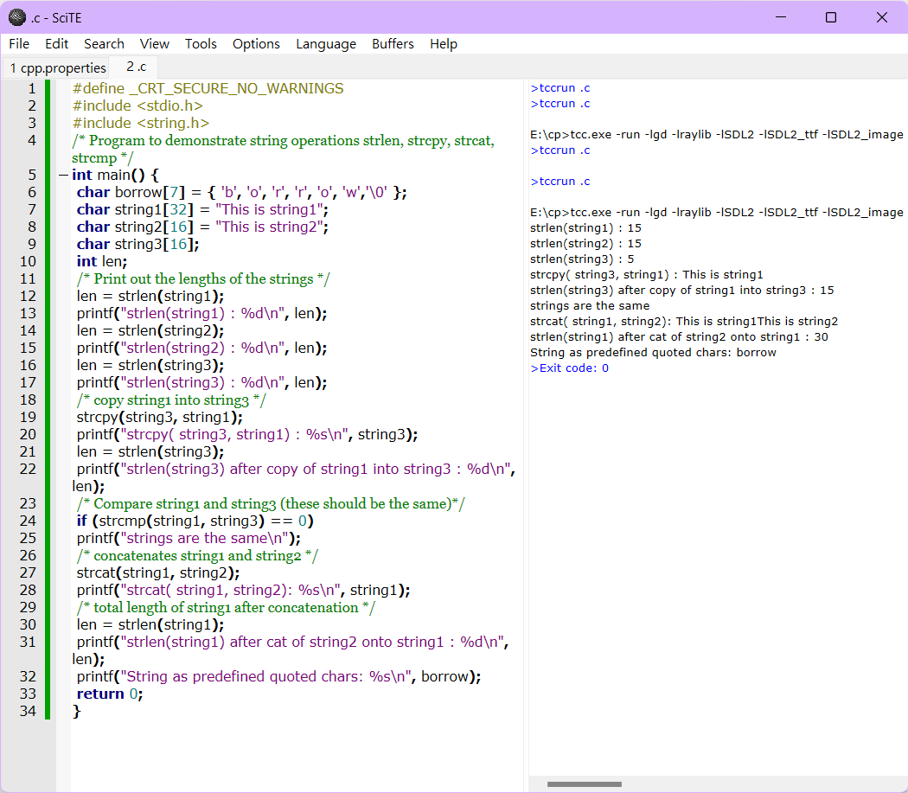
Exercises <<
Previous Next >> ANSIC